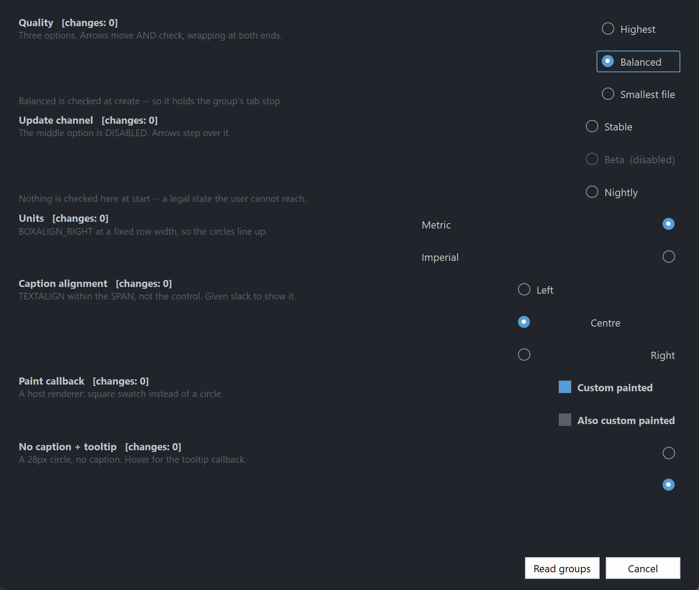

PsOptionButton
An owner-drawn option button (radio button) for FreeBASIC + Win32, built on AfxNova and PsBufferPaint.
A circle and an optional caption, side by side, with a focus ring around the pair. Unchecked draws a thin outlined ring; checked draws an accent-filled disc with a contrasting dot on it. No chrome, no animation, no group box.
The control owns mutual exclusion. Option buttons that share a parent window and a group id form a group, and checking one unchecks the rest. You do not write that logic, and you do not call anything after a click to keep the group consistent.
It also implements the keyboard behaviour a Windows radio group actually has, which is the part most hand-rolled radio buttons get wrong: the whole group is a single tab stop, and the arrow keys move the selection within it. Tab moves past the group, not through it.
Repository: <https://github.com/PaulSquires/PsOptionButton>
What it looks like

Requirements
Copy these files into your project:
| File | Purpose |
|---|---|
PsOptionButton.bi | public surface — types, enums, callbacks, declarations |
PsOptionButton.inc | implementation |
PsBufferPaint.bi | flicker-free drawing surface |
PsBufferPaint.inc | |
PsTipHost.bi / PsTipHost.inc | the tooltip backend switch — see Tooltips: two backends |
PsTooltip.bi / PsTooltip.inc | the owner-drawn tooltip. Required even if you never switch to it: PsTipHost.inc includes it. |
There is no icon font to ship. The circle is drawn as geometry through GDI+, so nothing here depends on Segoe Fluent Icons being installed.
You also need AfxNova on the include path (-i "C:\dev" if your tree matches this one).
Include order
PsBufferPaint.inc must be included before PsOptionButton.inc, and both after AfxNova:
#include once "windows.bi"
#include once "AfxNova\CWindow.inc"
#include once "AfxNova\AfxStr.inc"
#include once "AfxNova\AfxGdiplus.inc"
using AfxNova
#include once "PsBufferPaint.inc"
#include once "PsOptionButton.inc"Those two lines are the whole of it. PsOptionButton.inc includes PsTipHost.inc itself, and PsTipHost.inc includes PsTooltip.inc, so the tooltip backend adds no include line to the host — only the four files to the table above.
PsOptionButton.bi includes PsBufferPaint.bi itself, so the header is self-sufficient. It does not include windows.bi or AfxNova — the host must already have done so, and must already have said using AfxNova.
GDI+ must be running
Every repaint draws through GDI+. Initialise it before the first paint and shut it down after every window is destroyed:
CoInitialize( null )
dim as ULONG_PTR gdipToken = AfxGdipInit()
' ... create windows, run the message loop ...
AfxGdipShutdown( gdipToken )
CoUninitializeWithout the bracket the control draws nothing at all — no error, just an empty rectangle.
Do not name anything ok
GDI+ defines Ok = 0 as a Status enum value in namespace AfxNova. Every host says using AfxNova, so any host identifier called ok becomes a duplicate definition the moment you adopt this file. Use bOK.
Message pump
This control adds no pump obligation. There is no PsOptionButton_FilterMessage and none is needed. If you are coming from a control that has one, there is nothing to look for here.
It is focusable, though, so the two ordinary rules for a focusable control in a plain CWindow host both apply:
do while GetMessage( @uMsg, null, 0, 0 )
if uMsg.message = WM_QUIT then exit do
' IsDialogMessage is what makes Tab work at all.
if IsDialogMessage( pWindow->hWindow, @uMsg ) = 0 then
TranslateMessage @uMsg
DispatchMessage @uMsg
end if
loopand, before the loop starts:
SetFocus( hFirstControl )Without IsDialogMessage, Tab does nothing and the arrow keys still work. Without the startup SetFocus, the first Tab does nothing: IsDialogMessage only acts when the focused window is a descendant of the window passed to it, and at startup focus is on the form itself — a window is not its own child.
Quick start
' Three options in one group. The group id is the third Create argument.
dim as HWND hHigh = PsOptionButton_Create( hParent, 1001, 1 )
dim as HWND hMed = PsOptionButton_Create( hParent, 1002, 1 )
dim as HWND hLow = PsOptionButton_Create( hParent, 1003, 1 )
dim as HWND opts(0 to 2) = { hHigh, hMed, hLow }
dim as DWSTRING caps(0 to 2) = { "Highest", "Balanced", "Smallest file" }
for i as long = 0 to 2
PsOptionButton_SetFont( opts(i), hFont )
PsOptionButton_SetText( opts(i), caps(i) )
PsOptionButton_SetCheckChangedCallback( opts(i), @OnQualityChanged )
' The control is created 0x0 and hidden. Ask it how big it wants to be.
dim as long iw, ih
PsOptionButton_GetIdealSize( opts(i), iw, ih )
SetWindowPos( opts(i), 0, 20, 20 + (i * 30), iw, ih, SWP_NOZORDER or SWP_NOACTIVATE )
ShowWindow( opts(i), SW_SHOW )
next
' Silent: no callback fires. This also moves the group's tab stop here.
PsOptionButton_SetChecked( hMed, true )The callback it references:
sub OnQualityChanged( byval hOpt as HWND, byval isChecked as boolean )
' BOTH edges arrive here. The option being vacated fires first with isChecked = false,
' then the one being taken fires with true.
if isChecked then
print "quality is now id " & str( PsOptionButton_GetID( hOpt ) )
end if
end subReading the answer back later, without holding any of the handles:
dim as long nQuality = PsOptionButton_FindCheckedID( hParent, 1 ) ' -1 = unansweredConcepts
The handle is a real window
PsOptionButton_Create returns an ordinary HWND. Move it with SetWindowPos, show it with ShowWindow, disable it with EnableWindow — all of that works, and the control keeps its own state in step when you do. There is no opaque handle type.
A group is a parent plus a group id
A group is the pair (parent window, group id). Every option button with the same parent and the same group id is in the same group, and exactly one of them can be checked.
The group id is a Create parameter rather than only a setter, because a forgotten grouping call does not fail — it silently merges two groups into one, and the form looks right until somebody clicks. It defaults to 0, so a window with a single logical group needs no grouping calls at all.
hOpt1 = PsOptionButton_Create( hParent, 1001, 1 ) ' group 1
hOpt2 = PsOptionButton_Create( hParent, 1002, 1 ) ' group 1
hOpt3 = PsOptionButton_Create( hParent, 1003, 2 ) ' a different group, same parentTwo groups on one parent never interfere. PsOptionButton_SetGroupID moves a button between groups later.
Exactly one member of a group carries WS_TABSTOP
The checked member, or the first enabled member when nothing is checked. It moves automatically when the check moves, when a member is disabled, and when a member is destroyed.
That is what makes the group a single tab stop, which is how a Windows radio group behaves: Tab enters the group at the checked option and the next Tab leaves the group entirely. Within the group you navigate with the arrows.
You do not manage this bit, and you should not set WS_TABSTOP on these controls yourself.
Arrow order is creation order
The arrow keys walk the group in the order the buttons were created, not in z-order and not by screen position. If you create a group out of visual order, the arrows will follow the order you created them in.
Geometry is derived, never set
The control owns its rects. You set inputs — padding, the box cell size, the gap, the ring band — and the layout produces the rects from them. You can read them, but you cannot assign them.
ringPad = nFocusGap + nFocusThick reserved ALWAYS, focused or not
textBlock = hasText ? nBoxGap + textW : 0
contentH = max( hasText ? textH : 0 , nBoxHeight )
idealW = 2*ringPad + padLeft + boxWidth + textBlock + padRight
idealH = 2*ringPad + padTop + contentH + padBottom
rcContent = client deflated by ringPad
rcVisual = rcContent inflated by ringPadPsOptionButton_GetIdealSize is valid before the control has ever been sized, which is what lets you use it to decide how big to make the control in the first place.
The focus-ring band is reserved whether or not the control has focus, so nothing moves when focus arrives.
The box cell is pinned; the caption gets the leftover
The box cell sits against the padding on whichever side OPT_BOXALIGN_* puts it, and the caption takes the whole span that is left over. One model gives both looks, decided only by how wide you make the control:
sized to GetIdealSize (o) Highest quality packed
sized to a full row width Highest quality (o) settings rowA column of OPT_BOXALIGN_RIGHT buttons all sized to the same width line their circles up for free.
rcText is the span, not the ink. It runs from the box cell to the far padding so DT_END_ELLIPSIS has somewhere to ellipsize into. Drawing a background behind "the text" using that rect fills the whole span.
The circle is inscribed in the cell, not equal to it
rcBox is the declared cell the layout charges for. rcCircle is the largest centred square inside it — which is what actually gets drawn. They are identical for the default 16×16 cell and differ the moment you set a non-square one, at which point stroking rcBox would produce a stadium rather than a circle.
If you write a paint callback and want a round button, use rcCircle.
The dot scales with the circle by default
nDotSize is 0 by default, which means derive the dot as a percentage of the circle diameter. Set the box cell to 32px and the dot grows with it. A declared non-zero nDotSize overrides that and stays fixed — useful, but it decouples: scale the cell up afterwards and the dot will look wrong with nothing to warn you.
Setters are silent; user interaction notifies
PsOptionButton_SetChecked, SetGroupID and ClearGroup change state without firing any callback. Only a completed click, Space, an arrow-key move, or the explicit PsOptionButton_Click notifies.
That split is what makes it safe to call a setter from inside your own change callback — the recursive call cannot notify.
Both edges notify, and the loser fires first
When the user checks B while A was checked, two callbacks fire, in this order:
OnChanged( hA, false ) ' first
OnChanged( hB, true ) ' secondBoth state writes land before either callback runs, so reading PsOptionButton_FindChecked() from inside either one gives a coherent answer — the group is never observably double-checked or momentarily empty.
If you only care about the winner, test isChecked and ignore the other call.
Mouse capture and the cancelled gesture
Pressing an option button takes mouse capture. Press it, slide the cursor off, release — and nothing gets checked. The control paints the press state only while the cursor is inside, so the gesture visibly cancels before the release confirms it.
Behaviour and limits
- A group with nothing checked is legal, and it is the state a group starts in.
PsOptionButton_FindCheckedIDreturns-1for it. The user can never reach it — clicking the checked member is a silent no-op and no gesture unchecks. Only the host can empty a group, viaSetChecked(h, false)orClearGroup. - Enter is not claimed. A focused option button lets Enter through to the dialog's default button, which is what a Win32 radio button does. Space is the activation key.
- Groups cannot span parents. A group is (parent, id); two buttons with different parents are never in the same group even with the same id.
- Arrow keys clamp to the group and wrap at both ends. They never move focus out of it.
- Disabled members are stepped over by the arrows and refuse clicks, but
PsOptionButton_SetCheckedstill works on them — a host restoring saved settings onto a conditionally-greyed form has to be able to say which option is selected. - Destroying the checked member leaves the group with nothing checked. The check is not reassigned to a survivor. The tab stop is handed on, so the group stays reachable by Tab.
SetGroupIDmakes an arriving checked button lose if the destination group already has a checked member. Re-grouping is a layout operation, not a user answering a question.- The box cell is declared, never measured. Set it larger and the control gets wider; the control never sizes the cell to fit anything.
- A caption-less option button is shorter than a captioned one, because the content height ignores the font when there is no text. A host laying out a mixed column takes the max itself.
- No mnemonics. The renderer forces
DT_NOPREFIX, so&Highestdraws a literal ampersand.PsOptionButton_Clickis the door for a host accelerator. - No tri-state, no multiline captions, no
HICON, noWM_COMMANDsent to the parent, no hit-testing API. The whole client is the hit area, caption included. CS_DBLCLKSis not set. A rapid second click arrives as an ordinaryWM_LBUTTONDOWN.- Not thread-safe. Create and drive these from the UI thread only.
API reference
Creation
| Function | Behaviour |
|---|---|
PsOptionButton_Create( hWndParent, CtrlID, nGroupID = 0 ) as HWND | Creates the control as a hidden 0×0 child. nGroupID places it in a group; buttons sharing hWndParent and nGroupID are mutually exclusive. Returns the control's HWND. |
Group
| Function | Behaviour |
|---|---|
PsOptionButton_GetGroupID( hOpt ) as long | The button's group id. |
PsOptionButton_SetGroupID( hOpt, nGroupID ) | Moves the button to another group. Silent. Re-establishes the tab-stop rule in both the old and the new group. If the button was checked and the destination already has a checked member, the arriving button is unchecked. If it was the checked member of the group it left, that group is left with nothing checked. |
PsOptionButton_GetGroupCount( hOpt ) as long | How many live members the button's group has, including itself. |
PsOptionButton_GetGroupMember( hOpt, idx ) as HWND | The idx'th member of the group in creation order. 0 if idx is out of range. |
PsOptionButton_GetGroupChecked( hOpt ) as HWND | The checked member of the button's group, or 0 when nothing is checked. |
PsOptionButton_FindChecked( hWndParent, nGroupID ) as HWND | Same question asked without holding a member handle. 0 when nothing is checked. |
PsOptionButton_FindCheckedID( hWndParent, nGroupID ) as long | The control id of the checked member, or -1 when nothing is checked. -1 means unanswered, not failed. |
PsOptionButton_ClearGroup( hOpt ) | Unchecks every member of the button's group. Silent. The group keeps its tab stop. |
Content
| Function | Behaviour |
|---|---|
PsOptionButton_GetText( hOpt ) as DWSTRING | The caption. |
PsOptionButton_SetText( hOpt, Text ) | Sets the caption and re-measures. "" removes it, and the box gap is then not charged. Re-applies auto-size. |
PsOptionButton_GetID( hOpt ) as long | The host command id. Defaults to the CtrlID passed to Create. |
PsOptionButton_SetID( hOpt, id ) | Sets the id reported by FindCheckedID. Does not change the window's GWLP_ID. |
PsOptionButton_GetItemData( hOpt ) as integer | Free-form host payload. |
PsOptionButton_SetItemData( hOpt, itemData ) | Stores a host payload. The control never reads it. |
WM_SETTEXT, WM_GETTEXT and WM_GETTEXTLENGTH all alias the caption, so SetWindowTextW and GetWindowTextW work on these controls and agree with Get/SetText.
State
| Function | Behaviour |
|---|---|
PsOptionButton_GetChecked( hOpt ) as boolean | Whether this button is the checked member. |
PsOptionButton_SetChecked( hOpt, isChecked ) | Silent. Checking unchecks every peer and moves the group's tab stop here. Unchecking is allowed and leaves the group with nothing checked. Works on a disabled button. A no-op if the state is already what you asked for. |
PsOptionButton_GetEnabled( hOpt ) as boolean | Whether the control is enabled. |
PsOptionButton_SetEnabled( hOpt, isEnabled ) | Goes through EnableWindow, so the system enforces it. Clears any hover state. Disabling the member holding the group's tab stop hands it to another enabled member. |
PsOptionButton_GetFocused( hOpt ) as boolean | Whether the control currently has keyboard focus. |
PsOptionButton_Refresh( hOpt ) | Marks the layout stale and requests a repaint. Rarely needed — every setter does it. |
Action
| Function | Behaviour |
|---|---|
PsOptionButton_Click( hOpt ) | Checks the button as if the user had clicked it — it FIRES the change callbacks, both edges, loser first. A silent no-op when the button is already checked or is disabled. With no mnemonics, this is the only door a host accelerator has. |
Geometry and layout
| Function | Behaviour |
|---|---|
PsOptionButton_GetBoxAlign( hOpt ) as long | OPT_BOXALIGN_LEFT or OPT_BOXALIGN_RIGHT. |
PsOptionButton_SetBoxAlign( hOpt, nBoxAlign ) | Which side the circle sits on. Does not change the ideal size — the mirror is exact. |
PsOptionButton_GetTextAlign( hOpt ) as long | OPT_TEXTALIGN_LEFT / CENTER / RIGHT. |
PsOptionButton_SetTextAlign( hOpt, nTextAlign ) | Where the caption sits within its span, which is the leftover after the box cell and padding — not within the control. |
PsOptionButton_GetPadding( hOpt, nLeft, nTop, nRight, nBottom ) | Reads the four paddings. |
PsOptionButton_SetPadding( hOpt, nLeft, nTop, nRight, nBottom ) | Raw pixels — you scale for DPI. Re-measures and re-applies auto-size. |
PsOptionButton_GetBoxGap( hOpt ) as long | Gap between the box cell and the caption. |
PsOptionButton_SetBoxGap( hOpt, nBoxGap ) | Charged only when there is a caption. Re-measures. |
PsOptionButton_GetBoxSize( hOpt, nBoxWidth, nBoxHeight ) | Reads the declared box cell. |
PsOptionButton_SetBoxSize( hOpt, nBoxWidth, nBoxHeight ) | Sets the declared cell. Clamped to >= 0. The drawn circle is the largest centred square inside it. Re-measures. |
PsOptionButton_GetRingThickness( hOpt ) as long | The unchecked ring's pen width, in raw pixels. |
PsOptionButton_SetRingThickness( hOpt, nThickness ) | Raw pixels — do not pre-scale for DPI. The painter scales the pen itself; pre-scaling doubles it. Clamped to >= 0 (0 draws no ring). Repaints without re-measuring. |
PsOptionButton_GetDotSize( hOpt ) as long | The declared dot diameter, or 0 for derived. |
PsOptionButton_SetDotSize( hOpt, nDotSize ) | 0 derives the dot from the circle diameter (the default, and what keeps them in proportion). Non-zero is a fixed diameter. Clamped to >= 0, and at paint time to at least 2px and at most the circle. Re-derives the layout. |
PsOptionButton_GetFocusRing( hOpt, nGap, nThickness ) | Reads the focus band. |
PsOptionButton_SetFocusRing( hOpt, nGap, nThickness ) | The band is reserved unconditionally, so both values contribute to the ideal size and this re-measures. nThickness is raw pixels — the painter scales it. |
PsOptionButton_GetFocusCurvature( hOpt ) as long | Corner ellipse diameter of the focus ring. |
PsOptionButton_SetFocusCurvature( hOpt, nCurvature ) | Clamped to >= 0. 0 gives square corners. Repaints only. |
PsOptionButton_GetAutoSize( hOpt ) as boolean | Whether the control resizes itself. |
PsOptionButton_SetAutoSize( hOpt, bAutoSize ) | Opt-in. When on, the control SetWindowPoses itself to its ideal size after any change that could alter it, preserving the top-left. Off by default: normally the host measures and places. |
PsOptionButton_GetIdealSize( hOpt, nWidth, nHeight ) | The size the control wants. Valid before the control has ever been sized. |
PsOptionButton_GetContentRect( hOpt, rc ) as boolean | Client deflated by the focus band. |
PsOptionButton_GetBoxRect( hOpt, rc ) as boolean | The declared box cell. Never empty. |
PsOptionButton_GetCircleRect( hOpt, rc ) as boolean | The inscribed circle actually drawn. Never empty. |
PsOptionButton_GetDotRect( hOpt, rc ) as boolean | The dot, centred in the circle. Computed whether or not the button is checked. |
PsOptionButton_GetTextRect( hOpt, rc ) as boolean | The caption span. Returns FALSE and an empty rect when there is no caption. |
PsOptionButton_GetVisualRect( hOpt, rc ) as boolean | Content inflated by the focus band — the outer visual bounds. |
All six rect getters force any pending layout first, so they never hand back a stale value. They return FALSE when the control has no geometry yet or the rect is legitimately empty.
Appearance
| Function | Behaviour |
|---|---|
PsOptionButton_GetColors( hOpt, pColors ) | Copies the colour struct out. |
PsOptionButton_SetColors( hOpt, pColors ) | Copies the struct in and repaints. Read-modify-write it; do not build one from scratch unless you intend to set all 21 fields. |
PsOptionButton_GetFont( hOpt ) as HFONT | The caption font. The caller owns it. |
PsOptionButton_SetFont( hOpt, hTextFont ) | The measuring font: it drives the ideal width, so this re-measures and re-applies auto-size. The control never deletes it. |
Colour resolution
Both are pure functions — they take no control handle and touch no global, so you can call them from a paint callback to get exactly the colours the built-in painter would use.
| Function | Behaviour |
|---|---|
PsOptionButton_ResolveMood( isEnabled, isPressed, isHot ) as long | Returns one of OPT_MOOD_*. Precedence: disabled > pressed > hot > idle. |
PsOptionButton_ResolveColors( pColors, nMood, isChecked, clrBack, clrFore, clrRing, clrDot ) | Fills the four output colours for a mood. isChecked selects between the ring and ring-checked sets inside each mood. clrDot is resolved even when unchecked. |
Tooltips
| Function | Behaviour |
|---|---|
PsOptionButton_GetTooltipText( hOpt ) as DWSTRING | The control's own tooltip text. |
PsOptionButton_SetTooltipText( hOpt, Text ) | Sets it. When non-empty it wins over the tooltip callback. |
PsOptionButton_GetTooltipHandle( hOpt ) as HWND | The comctl32 tooltip window, for any TTM_* message you want to send it yourself. The control owns it and destroys it. Returns 0 while this button is on the PsTooltip backend — the honest answer, since a TTM_* sent to a PsTooltip window is silently ignored. |
PsOptionButton_GetPsTooltipHandle( hOpt ) as HWND | The PsTooltip window, or 0 while on the system backend. The door to PsTooltip_SetColors / SetFonts / SetStyle / SetMaxWidth / SetTitle / SetGlyph — none of which is mirrored here. |
PsOptionButton_SetTooltipMode( hOpt, nMode ) as boolean | PSTIP_MODE_SYSTEM (default) or PSTIP_MODE_PS. Returns TRUE when the requested mode is live on return. See below. |
PsOptionButton_GetTooltipMode( hOpt ) as long | Which backend is live. |
PsOptionButton_SetHoverTime( hOpt, milliseconds ) | Initial delay (TTDT_INITIAL) — how long the cursor must rest before a tip appears. Honoured by both backends. |
PsOptionButton_SetAutoPopTime( hOpt, milliseconds ) | How long the tip stays up (TTDT_AUTOPOP). |
PsOptionButton_SetReshowTime( hOpt, milliseconds ) | The shorter delay after a tip was recently dismissed (TTDT_RESHOW). |
There is no caption fallback: a control with neither its own tooltip text nor a callback answer shows nothing, rather than popping a tip that repeats the caption already on screen.
Tooltips: two backends
The control ships on the system (comctl32) tooltip it has always used. PSTIP_MODE_PS switches this instance to PsTooltip: owner-drawn, themeable, word-wrapping without a hand-sent TTM_SETMAXTIPWIDTH, and — the one that matters structurally — not a subclass of the control it serves, so it still works when the window under the cursor is a descendant rather than the control itself. Either way the control adds no pump obligation: PsTooltip has no FilterMessage, so switching changes nothing about your message loop.
The default is deliberate, not caution. PsTooltip's colour defaults are dark, so a control that switched itself would put a dark tip on a light form. Theme every tip in the process with PsTooltip_SetDefaultColors and friends, then opt in per instance.
The mode changes how a tip is drawn, never what it says. Both backends resolve text through the same rule — this control's own text first, then OPT_TooltipCallbackFunc, then nothing.
All three delays are stored as well as pushed, so one set before a mode switch is still in force after it, in either direction. A delay you never set keeps the backend's own derivation from the system double-click time, which is what makes a tip appear on the same beat as every other tip on the machine.
PsTooltip_SetDefaultColors( @myTipColors ) ' once, at startup, for every tip in the process
PsTooltip_SetDefaultFonts( ghFontUI )
PsOptionButton_SetTooltipMode( hOpt, PSTIP_MODE_PS )
PsOptionButton_SetHoverTime( hOpt, 400 )
dim as HWND hTip = PsOptionButton_GetPsTooltipHandle( hOpt )
if hTip then PsTooltip_SetTitle( hTip, "Render quality" ) ' not reachable on the system backendCallback registration
| Function | Behaviour |
|---|---|
PsOptionButton_SetPaintCallback( hOpt, usersub ) | Replaces the built-in painter entirely. |
PsOptionButton_SetMessageCallback( hOpt, userfunc ) | Observes messages; can suppress most default handling. |
PsOptionButton_SetTooltipCallback( hOpt, userfunc ) | Supplies tooltip text on demand. |
PsOptionButton_SetCheckChangedCallback( hOpt, usersub ) | Reports user-driven check changes. |
Render probes
Public so that a host supplying its own paint callback can assert it has not destroyed the control. Both render the control offscreen with its current painter.
| Function | Behaviour |
|---|---|
PsOptionButton_CountRenderedTones( hOpt, nPart ) as long | Number of distinct colours in one part, capped at 64. 0 if the control has no geometry. A part filled by a single rectangle reports 1 or 2 — calibrate any threshold against a deliberately broken render rather than assuming a low number means "not flooded". |
PsOptionButton_HashRenderedPart( hOpt, nPart ) as ulong | FNV-1a over the same render. Two different states must hash differently; the same state twice must hash identically. It can prove a difference, never correctness. 0 is also the failure return. |
nPart is one of the OPT_PART_* constants. Both force isFocused true internally so the focus ring is included, and restore it afterwards.
Colors
PSOPTIONBUTTON_COLORS, copied on SetColors. Twenty-one fields.
| Field | Paints | When |
|---|---|---|
BackColor | the control's background | idle |
BackColorHot | " | cursor over the control |
BackColorPressed | " | left button down, cursor inside |
BackColorDisabled | " | disabled |
ForeColor | the caption | idle |
ForeColorHot | " | hot |
ForeColorPressed | " | pressed |
ForeColorDisabled | " | disabled |
RingColor | the unchecked circle — a stroked outline, no fill | idle |
RingColorHot | " | hot |
RingColorPressed | " | pressed |
RingColorDisabled | " | disabled |
RingColorChecked | the checked circle — a solid accent fill | idle |
RingColorCheckedHot | " | hot |
RingColorCheckedPressed | " | pressed |
RingColorCheckedDisabled | " | disabled |
DotColor | the dot drawn on top of the checked fill | idle |
DotColorHot | " | hot |
DotColorPressed | " | pressed |
DotColorDisabled | " | disabled |
FocusRingColor | the focus ring around the whole control | whenever focused |
Precedence: disabled > pressed > hot > idle. isChecked is not a mood — it selects between the RingColor* and RingColorChecked* sets inside whichever mood resolved, so it works in all four without doubling the table.
The control reads completely flat by default, because BackColorHot, BackColorPressed and BackColorDisabled all default equal to BackColor. Hovering therefore changes only the circle and the caption. If you want a menu-style highlight across the whole row, set one field:
dim as PSOPTIONBUTTON_COLORS c
PsOptionButton_GetColors( hOpt, @c )
c.BackColorHot = BGR( 44, 49, 58 )
c.BackColorPressed = BGR( 44, 49, 58 )
PsOptionButton_SetColors( hOpt, @c )DotColor defaults to white rather than to ForeColor, because it sits on the accent fill rather than on the control background. DotColorDisabled defaults to the background colour, so a disabled checked button reads as a hollow ring.
Callbacks
OPT_CheckChangedCallbackSub
type OPT_CheckChangedCallbackSub as sub( byval hOptionButton as HWND, byval isChecked as boolean )Fires when the checked state changes through user interaction — a completed click, Space, an arrow-key move within the group, or the explicit PsOptionButton_Click.
Both edges fire, and the loser fires first. Checking B while A was checked produces OnChanged(hA, false) then OnChanged(hB, true). Both state writes land before either call, so PsOptionButton_FindChecked() is coherent from inside either one.
Fired after the state is updated, so PsOptionButton_GetChecked() agrees with isChecked.
SetChecked, SetGroupID and ClearGroup do not fire it — which is what makes it safe to call them from inside this handler.
OPT_PaintCallbackSub
type OPT_PaintCallbackSub as sub( byval p as PSOPTIONBUTTON_PAINTINFO ptr )Draws the whole control instead of the built-in painter. Paint through p->b, the control's double buffer for this repaint — do not touch the screen DC.
The control has already filled the client with the resolved mood's BackColor before calling you, so a callback that only adds a foreground does not have to repaint the background.
Two contracts worth honouring:
- Draw the caption with the same font you handed to
PsOptionButton_SetFont. The ideal width was measured with it; a different font means the width lies. - Do not use
PaintBorderRectto draw an outline. It fills unconditionally before it strokes, so used as a frame or a focus ring it erases everything beneath it.PaintRoundOutlinestrokes without filling.PaintEllipsealways fills regardless of its pen argument.PsOptionButton_CountRenderedTonesexists so you can assert you have not done this.
More generally: a callback that fills a rectangle covering the whole control erases everything the control already drew. Draw your additions, not a background.
OPT_MessageCallbackFunc
type OPT_MessageCallbackFunc as function( byval m as PSOPTIONBUTTON_MESSAGEINFO ptr ) as booleanObserves messages. Return TRUE to suppress the control's default handling, FALSE to let it proceed. Focus and keyboard messages are handed over as well as mouse ones. Arrow keys reach you before they move the group selection, so you can veto navigation.
The result is ignored for three messages:
| Message | Why |
|---|---|
WM_LBUTTONUP | The control holds mouse capture across a press and this message releases it. A callback that suppressed it would strand capture and route every later click to this control. Suppressing WM_LBUTTONDOWN suppresses the press without touching the capture bookkeeping. |
WM_SETFOCUS | Focus is a fact the system reports, not an action to veto. The state is already updated by the time you are called. |
WM_KILLFOCUS | " |
A host that does not want the control focusable must not make it a tab stop.
OPT_TooltipCallbackFunc
type OPT_TooltipCallbackFunc as function( byval hOptionButton as HWND ) as DWSTRINGSupplies tooltip text on demand, only when a tip is about to show, and only when the control has no tooltip text of its own. Return "" for no tooltip.
PSOPTIONBUTTON_PAINTINFO
| Field | Meaning |
|---|---|
hOptionButton | the control, so the callback can query it |
b | the control's PsBufferPaint for this repaint (not a copy) |
rcClient | the whole client area |
rcContent | rcClient deflated by the focus-ring band |
rcBox | the declared box cell. Never empty |
rcCircle | the inscribed circle — the largest centred square in rcBox. Use this for a round button |
rcDot | the dot, centred in rcCircle. Computed whether or not the button is checked |
rcText | the caption span, not the ink. Empty when there is no caption; degenerate when the client is too narrow |
rcVisual | rcContent inflated by the focus-ring band |
isChecked | this button is the group's checked member |
isHot | the mouse is over the control |
isPressed | a live left press and the cursor is still inside |
isEnabled | |
isFocused | draw a focus ring when true |
wszText | the caption |
nRingThick | ring pen width in raw pixels — PaintRoundOutline scales it for you |
nBoxAlign | OPT_BOXALIGN_* |
nTextAlign | OPT_TEXTALIGN_*; map to DT_LEFT / DT_CENTER / DT_RIGHT |
PSOPTIONBUTTON_MESSAGEINFO
| Field | Meaning |
|---|---|
hOptionButton | the control |
uMsg | the message |
wParam | |
lParam |
Constants
Box side
| Constant | Meaning |
|---|---|
OPT_BOXALIGN_LEFT | circle pinned to the left padding (default) |
OPT_BOXALIGN_RIGHT | circle pinned to the right padding |
Caption alignment within the span
| Constant | Meaning |
|---|---|
OPT_TEXTALIGN_LEFT | default |
OPT_TEXTALIGN_CENTER | |
OPT_TEXTALIGN_RIGHT |
Moods
| Constant | |
|---|---|
OPT_MOOD_IDLE | |
OPT_MOOD_HOT | |
OPT_MOOD_PRESSED | |
OPT_MOOD_DISABLED |
Probe parts
| Constant | Rect measured |
|---|---|
OPT_PART_CONTROL | rcContent |
OPT_PART_BOX | rcBox, the declared cell |
OPT_PART_TEXT | rcText, the caption span |
Default geometry
DPI-scaled once at Create, except where noted. Every setter afterwards takes raw pixels.
| Constant | Value | |
|---|---|---|
PSOPTIONBUTTON_DEFAULT_PADLEFT | 4 | |
PSOPTIONBUTTON_DEFAULT_PADTOP | 2 | |
PSOPTIONBUTTON_DEFAULT_PADRIGHT | 4 | |
PSOPTIONBUTTON_DEFAULT_PADBOTTOM | 2 | |
PSOPTIONBUTTON_DEFAULT_BOXGAP | 8 | charged only when there is a caption |
PSOPTIONBUTTON_DEFAULT_BOXWIDTH | 16 | the declared cell |
PSOPTIONBUTTON_DEFAULT_BOXHEIGHT | 16 | |
PSOPTIONBUTTON_DEFAULT_RINGTHICK | 1 | not scaled at Create — the painter scales the pen |
PSOPTIONBUTTON_DEFAULT_FOCUSTHICK | 1 | not scaled at Create — same reason |
PSOPTIONBUTTON_DEFAULT_DOTSIZE | 0 | 0 = derive from the circle diameter |
PSOPTIONBUTTON_DOTRATIO_PCT | 40 | the derived dot, as a percentage of the circle |
PSOPTIONBUTTON_DEFAULT_FOCUSGAP | 2 | |
PSOPTIONBUTTON_DEFAULT_FOCUSCURV | 4 | ellipse diameter, not a radius |
PSOPTIONBUTTON_DEFAULT_GROUPID | 0 |
The two pen widths are the exception worth remembering: PaintRoundOutline DPI-scales the pen it is handed, so scaling them at creation as well would double them at any scale above 100%. They are DPI-aware — the painter is simply the thing that does it.
Hover tracking
| Constant | Value | |
|---|---|---|
PSOPTIONBUTTON_HOTTRACK_MS | 100 | poll interval for the hover safety net, since WM_MOUSELEAVE is not guaranteed on a fast exit |
Licence
Mozilla Public License 2.0.
MPL-2.0 is file-level copyleft, chosen deliberately for a drop-in control:
- You may use this in closed-source software, commercial or otherwise. §3.2 permits static linking with no additional conditions.
- If you modify these files, publish those files' changes. The obligation is per-file — your own sources are unaffected however tightly they are combined with these.
- The Exhibit B "Incompatible With Secondary Licenses" notice is not applied, which keeps this GPL-compatible.